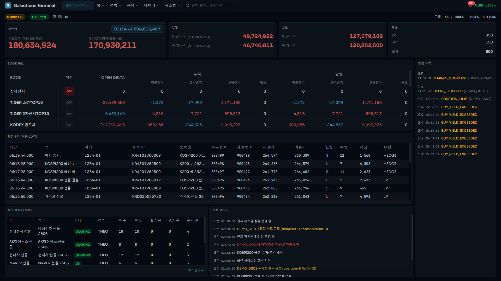
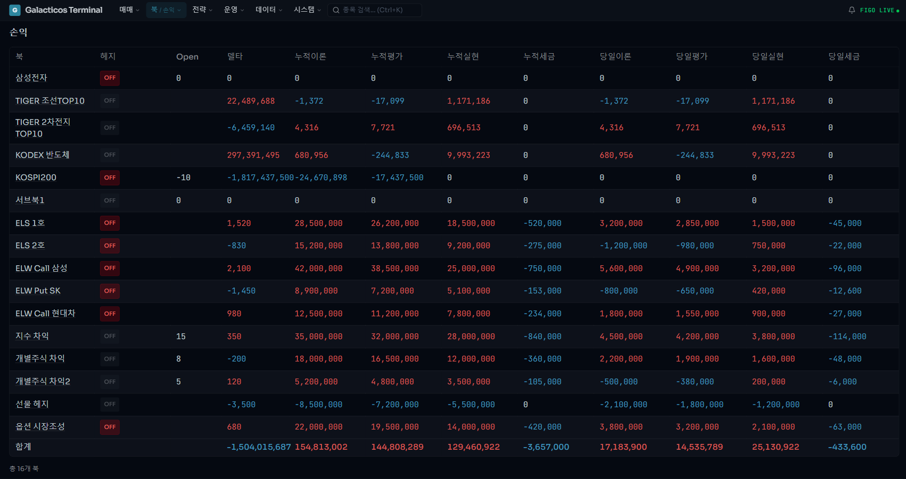

DAN Research는 시장조성, 차익거래, ETF LP 운영에 필요한 시스템을 설계·구축합니다.
트레이더는 관리가 아니라 판단과 매매에 집중할 수 있어야 합니다.
종목 수가 늘어나도 수작업이 병목이 되지 않도록 설계합니다.
호가, 헤지, 리스크, 모니터링을 분리하지 않고 한 시스템으로 만듭니다.
실거래 환경에서 발생하는 예외와 운영 문제까지 함께 개선합니다.
금융을 이해하는 엔지니어가
트레이딩 데스크의 실제 운영 문제를 시스템으로 해결합니다.
시장조성 · 차익거래 · ETF LP
전략 이름만 아는 팀이 아니라, 운영 과정에서 어디서 실수가 나고 어떤 부분이 병목이 되는지 이해합니다.
저지연 서버부터 실시간 대시보드까지
주문 처리, 리스크 관리, 모니터링, 운영 UI까지 필요한 시스템을 분절 없이 직접 설계하고 구축합니다.
납품형이 아니라 운영형
시스템은 배포 후부터가 시작입니다. 실거래 환경에서 생기는 예외, 장애, 운영 비효율까지 함께 개선합니다.
종목은 많아지는데, 운영은 여전히 사람이 하나씩 챙깁니다.
호가 운영, 공시 확인, 배당 반영, 잔고 점검, 예외 대응까지 종목별 반복 작업이 쌓이면 트레이더의 시간은 관리에 소모됩니다. 이 구조에서는 종목 수가 늘수록 실수 위험도 함께 커집니다.
반복 업무는 자동화하고, 사람은 예외 상황만 보게 합니다.
호가 자동 조정, 헤지, 종목 일괄 관리, 상태 모니터링, 경보 체계를 연결해 운영 흐름을 시스템 중심으로 전환합니다. 사람이 모든 종목을 직접 감시하는 구조에서, 시스템이 먼저 관리하고 사람이 판단하는 구조로 바꿉니다.
트레이더가 운영이 아니라 매매와 판단에 집중할 수 있게 됩니다.
종목 수가 늘어나도 운영 부담이 선형적으로 커지지 않도록 만들고, 반복 작업과 누락 가능성을 줄여 보다 안정적으로 전략을 실행할 수 있는 환경을 제공합니다.
시장조성, 차익거래, ETF LP를 위한 통합 OMS
전략별 로직은 달라도, 운영에 필요한 기반은 하나여야 합니다.
DAN OMS는 주문 관리, 리스크, 모니터링, 대시보드를 하나의 시스템으로 통합합니다.
전략별 실행 모듈 위에, 공통 운영 레이어를 통합한 트레이딩 시스템
시장조성 운영에 필요한 의무호가, 점수 관리, 이론가 기반 호가, 그릭스 헤지까지 자동화합니다.
개별주식·지수 차익거래와 스프레드 매매, 공시·배당 관리까지 반복 감시를 체계화합니다.
NAV 차익 포착, 스프레드 기반 전략, 포트폴리오 통합 헤지를 하나의 시스템에서 운용합니다.
실제 운영 화면 기반 예시 · 고객 정보 비식별 처리


트레이딩 시스템은 저지연 엔지니어링, 전략 로직 이해, 운영 경험이 함께 있어야 제대로 작동합니다.
초저지연 호가 엔진부터 운영 대시보드까지 성능과 운영성을 함께 고려해 전체 스택을 설계합니다.
호가 전략, 헤지 로직, 리스크 규칙을 단순 개발 요청서가 아니라 데스크의 의도 기준으로 구현합니다.
시장조성, 차익거래, ETF LP 환경에서 필요한 운영 흐름을 이해하고 실거래 환경에 맞는 시스템 구조를 만듭니다.
현재 운영 방식과 가장 불편한 지점을 남겨주시면, 어떤 구조로 개선할 수 있을지 함께 보겠습니다.